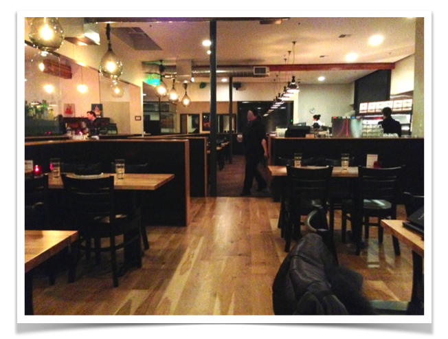

Imagine a group of 10 Italian women that meet after weeks of "separation". Imagine now that they have to catch up, so they start chatting. And chatting. And chatting. Can you see the hand gestures flying in the air? Can you hear the boomings of laughter abruptly exploding? Can you see the clock on the wall? Well, apparently they don't because at 10.30pm they suddenly realize that the restaurant is completely empty and they are the only people left in sight. But time doesn't scare them. They continue chatting. And chatting. And chatting. Now it's 10 past 11pm, and one of them (a.k.a. me) decides to take a photo of the empty pizzeria, where, in the distance, you can see the notorious clock showing them that while in the States everybody is already gone, in Italy it would have barely been the time to order the dessert and maybe even a caffettino (with a shot of grappa? Si, grazie!). But the signore keep on chatting. Some waiters start leaving, while others eat their dinner. And the clock keeps ticking. Now it's 11:45pm and the women feel that maybe now they should really go. They feel bad for the restaurant employees who are too nice to come to their table to gently tell them: "Come on ladies, do the right thing, go home". And so the 10 Italian women do leave, wondering if the next time one of them will call to make a reservation, the receptionist will kindly pretend that all (150) tables have already been taken...